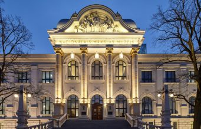
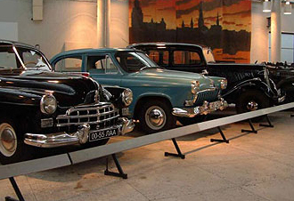
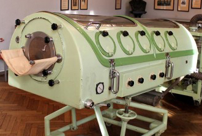
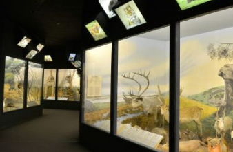

Латвийский национальный художественный музей
Латвийский национальный художественный музей является крупнейшим хранилищем профессионального искусства в Латвии. После масштабной реконструкции музей открылся в мае 2016 года в более современном облике, сохранив величественность исторического здания.Дополнительно:www.lnmm.lv
Рижский мотор-музей
В Рижском мотор-музее представлена крупнейшая в Балтии коллекция старинных транспортных средств. Экспозиция музея – это интерактивный и захватывающий рассказ о событиях, людях и автомобилях с помощью современных технологических решений и мультимедийных средств.Дополнительно:www.motormuzejs.lv
Музей истории медицины им. П. Страдыня
Музей истории медицины имени Паула Страдыня - один из трех крупнейших историко-медицинских музеев мира. В експозиции можно ознакомиться с историей развития медицины начиная от этномедицины до середины хх столетия.Дополнительно:www.mvm.lv
Музей истории медицины им. П. Страдыня
Латвийский музей природы – настоящий оазис посреди цивилизации. Музей расположен в самом центре Риги и является одним из самых посещаемых в стране. .Дополнительно:www.dabasmuzejs.gov.lv
|